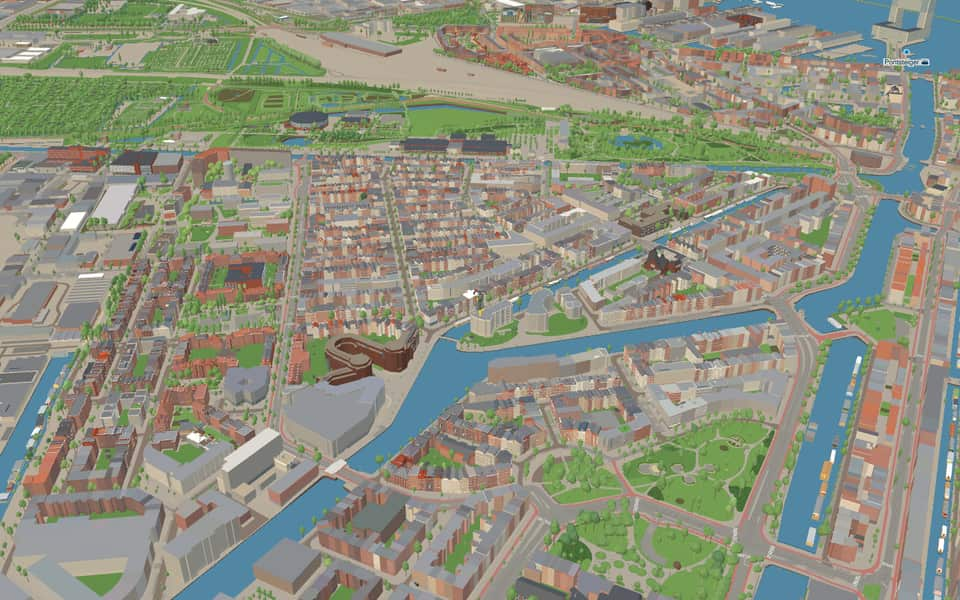
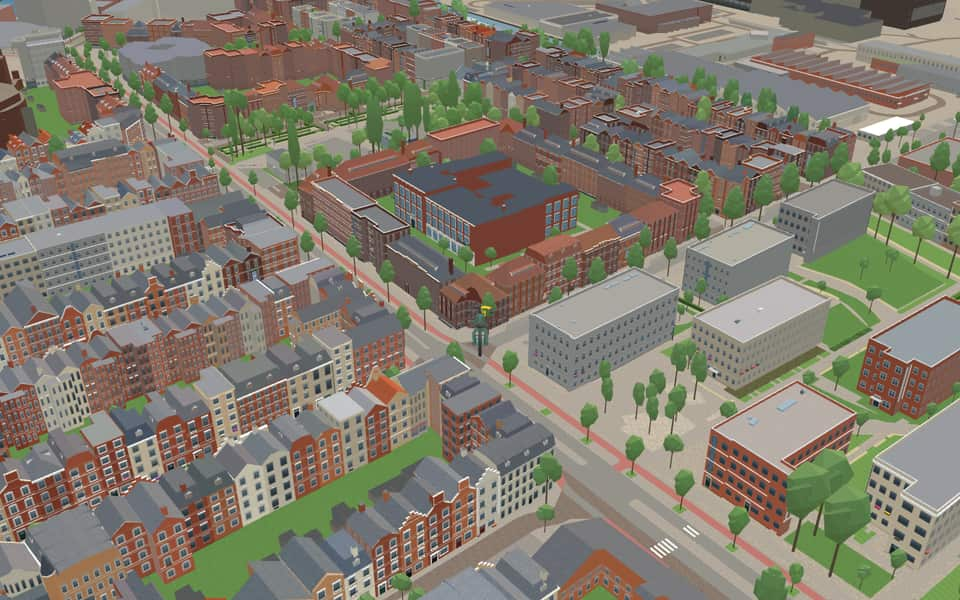
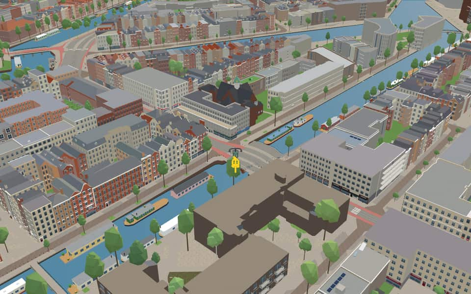
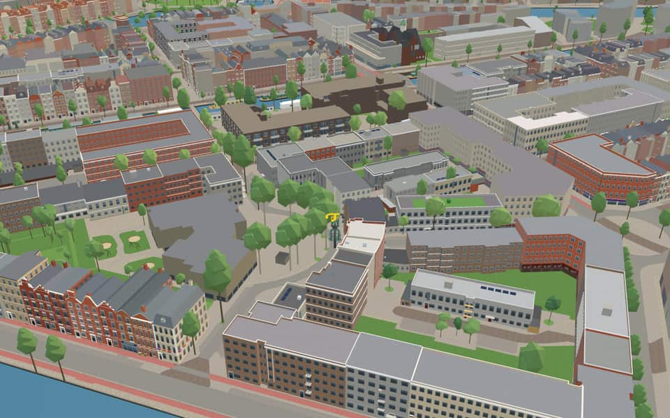

Quarter · Amsterdam
Staatsliedenbuurt
The Staatsliedenbuurt (lit. 'Neighborhood of the Statesmen') is a neighborhood in Amsterdam borough of West. It lies south of the Haarlemmertrekvaart canal and west of the Singelgracht canal route, which includes the local portions Kattensloot and Kostverlorenvaart. en.wikipedia.org
The name. Staatsliedenbuurt means 'Neighbourhood of the Statesmen': after Amsterdam annexed the area in 1877, its streets were named after Dutch statesmen of the 18th and 19th centuries. en.wikipedia.org


In the game
Frames from a ride through Staatsliedenbuurt.




6 more photos of Staatsliedenbuurt


.jpg){kind=link}

.jpg){kind=link}


Built here
Buildings modelled one by one for the ride.
Filmhuis Cavia / former twin-school complex
Nassaukerk
Van Beuningenstraat 48, Amsterdam-West (Staatsliedenbuurt)
1978 social-housing block of tan brick with grey concrete bands, balcony runs and rounded corners, in four storeys on the south-east and three on the north-west
- No picture yet
Van der Palmkade 191, Amsterdam-West
2001 serpentine apartment block in dark brick with a cream first-floor band, round-arched loggias and terraced attic storeys facing the canal
Did you know
Trivia the ride can show you here.
- It was nicknamed the ‘brass buttons neighbourhood’ for the tram conductors and other uniformed workers housed here. Wikipedia (translated from Dutch)
- In the 1980s it became a squatters' stronghold, centred on the squat café De Rioolrat. Wikipedia (translated from Dutch)
- Filmhuis Cavia grew out of the squatters' movement in the 1980s. Wikipedia (translated from Dutch)
- The Roze Filmdagen, CinemAsia and KLIK! film festivals all started at Filmhuis Cavia. Wikipedia (translated from Dutch)
- The Haarlemmervaart, the old canal from Amsterdam to Haarlem, has always formed its northern edge. Wikipedia
- Until 1877, the area was partly part of the former Sloten municipality. That year, the northeastern part of Sloten was annexed by Amsterdam. The part closest to the Singelgracht was already within Amsterdam's borders and was a neighborhood with many windmills just outside the city limits. The Kostverlorenvaart served as the vital traffic artery that opened up the area. The canal connecting Amsterdam to Haarlem, the Haarlemmervaart, was and remains the northern boundary of the neighborhood. en.wikipedia.org
- Filmhuis CaviaThe cinema emerged in the 1980s from the squatting movement. nl.wikipedia.org
- Filmhuis CaviaFestivals like Pink Film Days and CinemAsia began their runs here. nl.wikipedia.org
- Filmhuis CaviaAnalog films in 16 and 35 mm formats are still projected alongside digital ones. nl.wikipedia.org
- NassaukerkValckx & Van Kouteren constructed the pneumatic instrument in 1931. nl.wikipedia.org
- NassaukerkA 1940 sale plan was abandoned after the Haarlemmerpoortkerk was sold instead. nl.wikipedia.org
- Eén Honderd RoedebrugThe 1886 version used 14 tons of wrought iron beams with a wooden emergency bridge. nl.wikipedia.org
- Eén Honderd RoedebrugA major reconstruction using 38 tons of iron and granite occurred between 1913 and 1914. nl.wikipedia.org
- Eén Honderd RoedebrugHelena Aaltje van Zandbergen claimed to see art in a found sight without further indicating this herself. nl.wikipedia.org
15 more facts
- StaatsliedenbrugStaatsliedenbrug takes its name from the Staatsliedenbuurt district it connects. nl.wikipedia.org
- StaatsliedenbrugTram line 5 began crossing this traffic bridge in July 2018. nl.wikipedia.org
- KostverlorenvaartThe name Kostverlorenvaart (Lost Cost) arose because the sluice gates became unusable, wasting money. nl.wikipedia.org
- KostverlorenvaartAmsterdam fiercely opposed a 1413 plan to dig locks that might let enemies flood the city. nl.wikipedia.org
- KostverlorenvaartA turnaround path called an overtoom was laid on a dam in 1515 to allow small ships to pass. nl.wikipedia.org
- HaarlemmerwegThe path became the Haarlemmerweg when it was paved in 1762. nl.wikipedia.org
- HaarlemmerwegIn 1839, the first train to ever depart in Dutch history left from a station here. nl.wikipedia.org
- HaarlemmerwegSince 1921, the entire road has belonged to Amsterdam after the municipality of Sloten was annexed. nl.wikipedia.org
- HaarlemmerwegStretching 8.3 kilometers, this road holds the title of Amsterdam's longest street. nl.wikipedia.org
- NassaukadeNearby Nassauplein and two Nassau streets share the same royal namesake origin. nl.wikipedia.org
- NassaukadeA movable bridge over the Kattensloot was renovated in 1954. nl.wikipedia.org
- NassaukadeEight municipal monuments line this street, including numbers 17 and 18. nl.wikipedia.org
- NassaupleinA narrow stretch of the Kostverlorenvaart on the west side is rarely used for navigation. nl.wikipedia.org
- NassaupleinThe Pink Elephant tower features a round facade in soft pink speckles and stands eight stories tall. nl.wikipedia.org
- NassaupleinPiet Kramer designed the oldest building on the square, a 1933 bridge keeper's cottage. nl.wikipedia.org
Names on the map
Where the canal, bridge and street names come from.
Canals and water
- KostverlorenvaartAfter the Kostverlorenwetering, dug in 1413 to give a shorter waterway to the Haarlem and Leiden lakes. According to some, the name Kostverloren (cost lost) comes from the heavy legal costs of this channel, which was a bone of contention between Amsterdam and Haarlem until 1609. The name Kostverloren occurs in several places in the Netherlands.
Bridges
- Eén Honderd RoedebrugBridge 347: a steel bridge for road traffic, dated 1913 in the city's bridge register.
- StaatsliedenbrugThis bridge is named after the neighbourhood it lies in, the Staatsliedenbuurt.Bridge 139: a steel bridge for road traffic, dated 1931 in the city's bridge register.
Streets
- BentinckstraatBarend Hendrik baron Bentinck tot Buckhorst (1753-1830), governor of Overijssel. He was forced to leave the country because of his sympathy for stadholder Willem V. He played an important role in the founding of the Kingdom in 1813.
- BuyskadeJohan Theodoor Buys (1828-1893), Leiden professor of political science. His works include 'De Grondwet' (the Constitution), a three-volume standard work published 1883-1888.
- BuyspadJohan Theodoor Buys (1828-1893), Leiden professor of political science. His works include 'De grondwet' (the Constitution), a three-volume standard work published between 1883 and 1888.
- CliffordstraatJonkheer George Gerard Clifford (1779-1847). Treasurer of Amsterdam, Minister of the Colonies, Minister of State.
- De KempenaerstraatJacob Mattheus de Kempenaer (1793-1870), liberal statesman. Minister of the Interior (1848-1849). He helped draft the constitution adopted in 1848.
- De WittenkadeThe brothers Cornelis de Witt (1623-1672), burgomaster of Dordrecht, and Johan de Witt (1625-1672), Grand Pensionary of Holland, both murdered by the mob in The Hague on a false accusation. One side of the quay was first called Maljapenkade.
- De WittenstraatThe brothers Cornelis de Witt (1623-1672), burgomaster of Dordrecht, and Johan de Witt (1625-1672), Grand Pensionary of Holland, both murdered by the mob in The Hague on a false accusation. One side of the quay was first called Maljapenkade.
- Donker CurtiusstraatDirk Donker Curtius (1792-1864), liberal statesman, at first a journalist. He campaigned for revision of the constitution and was later Minister of Justice. He was responsible for the laws on ministerial responsibility and on the right of association.
- Eerste KeucheniusstraatLevinus W.C. Keuchenius (1822-1893), Anti-Revolutionary statesman and fierce opponent of the state school. Minister of the Colonies from 1888 to 1890.
- Eerste NassaustraatNamed after our royal house of Orange-Nassau. Before it was named in 1879, the quay was called Buitensingel.
- Fannius ScholtenstraatCornelis A. Fannius Scholten (1767-1832), lawyer in The Hague. During the revolution of 1813 he was, with Melchior Kemper, commissioner of the General Government in Amsterdam, and afterwards Councillor of State in extraordinary service.
- Groen van PrinstererstraatGuillaume Groen van Prinsterer (1801-1876), statesman and historian, leader of the Anti-Revolutionaries from 1849 to 1866, and a fierce opponent of liberals and Roman Catholics.
29 more streets with a story
- HaarlemmerwegThe main road to Haarlem.
- Jacob CatskadeJacob Cats (1577-1660), also known as Vadertje (Father) Cats, poet and statesman, among other things Grand Pensionary of Holland and West-Friesland under Frederik Hendrik. His didactic poetry made him hugely popular.
- Joan Melchior KemperstraatLegal scholar (1776-1824), professor in Amsterdam and Leiden, who campaigned against the rule of the regents and for constitutional government.
- Korte De WittenstraatThe brothers Cornelis de Witt (1623-1672), burgomaster of Dordrecht, and Johan de Witt (1625-1672), Grand Pensionary of Holland, both murdered by the mob in The Hague on a false accusation. One side of the quay was first called Maljapenkade.
- LuzacstraatLodewijk Caspar Luzac (1786-1861), statesman and Minister of the Interior, who helped prepare the constitutional revision of 1848.
- NassaukadeNamed after our royal house of Orange-Nassau. Before it was named in 1879, the quay was called Buitensingel.
- NassaupleinNamed after our royal house of Orange-Nassau. Before it was named in 1879, the quay was called Buitensingel.
- RochussenstraatJan Jacob Rochussen (1797-1871), statesman, successively Minister of Finance, Governor-General of the Dutch East Indies and Minister of the Colonies.
- SchaepmanstraatHerman Johan A.M. Schaepman (1844-1903), Roman Catholic priest, statesman and poet, professor at the Rijsenburg seminary. A member of parliament from 1880 to 1903, he favoured wider suffrage and social legislation. He edited the daily 'De Tijd' and later 'Het Centrum'. As a poet he followed Bilderdijk and Da Costa.
- StaatsliedenbrugThis bridge is named after the neighbourhood it lies in, the Staatsliedenbuurt.
- Tweede KeucheniusstraatLevinus W.C. Keuchenius (1822-1893), Anti-Revolutionary statesman and fierce opponent of the state school. Minister of the Colonies from 1888 to 1890.
- Tweede NassaustraatNamed after our royal house of Orange-Nassau. Before it was named in 1879, the quay was called Buitensingel.
- Van BeuningenpleinCoenraad van Beuningen (1622-1693), burgomaster of Amsterdam, statesman and envoy to various foreign courts.
- Van BeuningenstraatCoenraad van Beuningen (1622-1693), burgomaster of Amsterdam, statesman and envoy to various foreign courts.
- Van BoetzelaerstraatPieter Alexander Baron van Boetzelaer (1759-1826), one of the burgomasters of Amsterdam from 1813 to 1824. After 1824 Amsterdam was governed by a single burgomaster.
- Van BossestraatPeter Philip van Bosse (1809-1879), liberal statesman, several times Minister of Finance and of the Colonies, who campaigned for free trade.
- Van der DuijnstraatAdam F.J.A. Count van der Duyn van Maasdam (1771-1848), one of the triumvirate (with Van Hogendorp and Van Limburg Stirum) that took charge of the government in 1813 and prepared the restoration of the stadtholder's family.
- Van der HoopstraatJoan Cornelis van der Hoop (1742-1825), after the upheaval of 1813 chairman of the provisional government of Amsterdam, and in 1814 Minister of the Navy.
- Van HallstraatFloris Adriaan van Hall (1791-1866), Amsterdam lawyer, who as Minister of Finance in 1844 took drastic measures to pay off the enormous national debt, and in 1848 led the conservative opposition.
- Van HogendorppleinGijsbert Karel van Hogendorp (1762-1834), liberal statesman and pensionary of Rotterdam, who with Van der Duyn van Maasdam and Van Limburg Stirum prepared the restoration of Dutch independence after the fall of Napoleon, and chaired the constitutional commission.
- Van HogendorpstraatGijsbert Karel van Hogendorp (1762-1834), liberal statesman and pensionary of Rotterdam, who with Van der Duyn van Maasdam and Van Limburg Stirum prepared the restoration of Dutch independence after the fall of Napoleon, and chaired the constitutional commission.
- Van Limburg StirumpleinLeopold Count van Limburg Stirum (1758-1840), captain in the States army, who in 1813 took on the provisional government with Van Hogendorp and Van der Duyn van Maasdam and prepared the arrival of King William I.
- Van Limburg StirumstraatLeopold Count van Limburg Stirum (1758-1840), captain in the States army, who in 1813 took on the provisional government with Van Hogendorp and Van der Duyn van Maasdam and prepared the arrival of King William I.
- Van RappardstraatWillem Louis C. Ridder van Rappard (1798-1862), statesman, Minister of Finance in 1847.
- Van ReenenstraatJhr. Gerlach Cornelis Joannes van Reenen (1818-1893), burgomaster from 1850 to 1853, then Minister of the Interior until 1856, and afterwards for many years president of the House of Representatives and a member of the Council of State.
- VisseringstraatSimon Vissering (1818-1888), professor of political science at Leiden and Minister of Finance, who as early as 1848 campaigned for IJmuiden as a new seaport.
- WaterkeringwegAny natural or artificial barrier that holds back water, such as a dam, dike or lock. The street lies on the former site of the municipal waterworks, in a neighbourhood where all the street names begin with 'water'.
- WaterpoortwegA gate in a wall; a defensive work built over a moat. The street lies on the former site of the municipal waterworks, in a neighbourhood where all the street names begin with 'water'.
- WichersstraatJhr. Mr. Hendrik Ludolf Wichers (1800-1853), statesman and jurist, Minister of Justice in 1849 in the De Kempenaer cabinet and then a member of the Council of State.